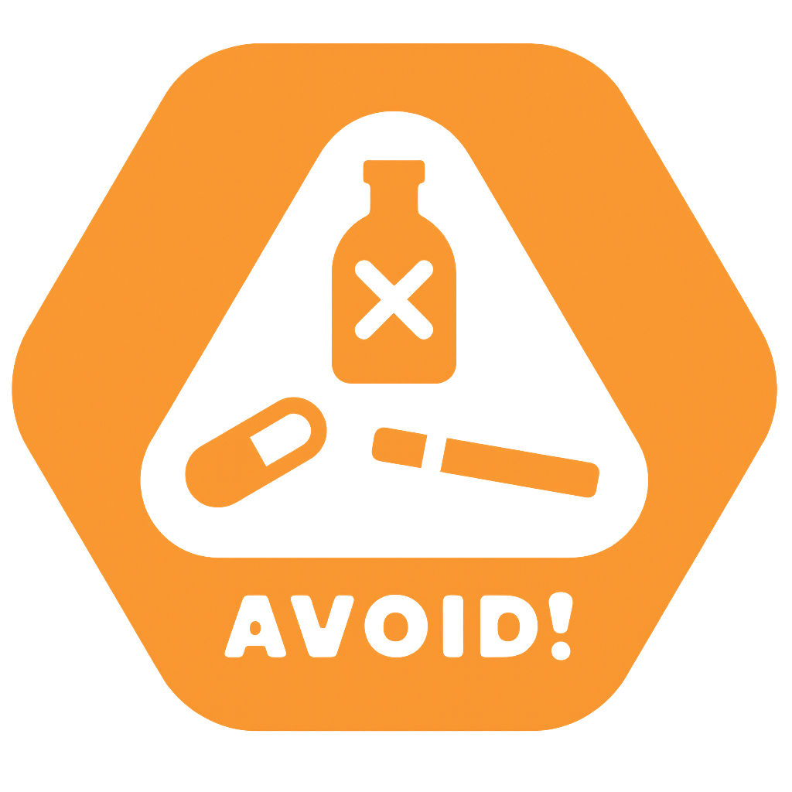

Discipline of Geriatrics and Gerontology, Department of Medicine. Paulista School of Medicine (EPM), Federal University of São Paulo (UNIFESP). São Paulo, Brazil.
Authors: Marianne Wolff Rezende Teixeira, MD (UNIFESP); Matheus de Oliveira Barros, MD (UNIFESP); Luciano Pereira Soares, PhD (Insper); Adriana Bruscato Bortoluzzo, PhD (Insper); Maysa Seabra Cendoroglo, MD, PhD (UNIFESP); Gisele Wally Braga Colleoni, MD, PhD (UNIFESP)
Contributors: Maísa Braga Aguiar, MD (UNIFESP); Lia Alexandre Botelho de Paula, MD (UNIFESP); Ana Beatriz Galhardi Di Tommaso, MD, MSc (UNIFESP); Eduardo Canteiro Cruz, MD (UNIFESP)
Step
CFS:
FRIED:
2–5-year mortality risk:
4-year mortality risk:
Consent:
Step 1 — Frailty
Fill the Fried Criteria or Clinical Frailty Scale (CFS). Only one method is needed to proceed.
Continue
Clear
Step 2 — Does the patient have a dementia diagnosis?
Yes
No
Back
Step 3 — Deardorff Index (Dementia)
Smoking
Never Former smoker Current
Activities of Daily Living (ADL) dependencies — includes needing help with dressing, bathing, eating, getting in or out of bed, and toileting (0-5)
Instrumental Activities of Daily Living (IADL) difficulties — includes difficulty using a telephone, preparing a meal, managing medications, managing money such as paying bills, and shopping for groceries (0-5)
2–5-year mortality risk (range):
Apply to flowchart
Clear
Back
Step 4 — Shared decision-making
Question: If the result is positive, does the patient and/or their family agree to proceed with diagnostic evaluation and treatment?
Yes
No
Back
Interventions (pharmacological and non-pharmacological therapies) can be implemented and change this decision.
Intervention examples:
©2025 American College of Lifestyle Medicine. All rights reserved. lifestylemedicine.org.

Risky Substance Avoidance
CFS:
FRIED:
Frailty: —
Dementia:
4-year mortality risk:
Lee
2–5-year mortality risk:
Deardorff
Consent:
Start over
Reset
Print
Advice:
Start over returns to Step 1 keeping data already entered;
Reset clears all data and restarts the calculator.
No data is stored or retained. Prognostic tools support, they do not replace, clinical judgment.
References
Cruz M, Covinsky K, Widera EW, Stijacic-Cenzer I, Lee SJ. Predicting 10-year mortality for older adults. JAMA . 2013;309(9):874-876.
doi: 10.1001/jama.2013.1184 .
PMID: 23462780; PMCID: PMC3760279.
Cruz-Jentoft AJ, Bahat G, Bauer J, Boirie Y, Bruyère O, Cederholm T, et al.; Writing Group for the European Working Group on Sarcopenia in Older People 2 (EWGSOP2), and the Extended Group for EWGSOP2.
Sarcopenia: revised European consensus on definition and diagnosis. Age Ageing . 2019;48(4):601 (Erratum to: 2019;48(1):16-31).
doi: 10.1093/ageing/afz046 .
PMID: 31081853; PMCID: PMC6593317.
Deardorff WJ, Barnes DE, Jeon SY, Boscardin WJ, Langa KM, Covinsky KE, et al.
Development and External Validation of a Mortality Prediction Model for Community-Dwelling Older Adults With Dementia. JAMA Intern Med . 2022;182(11):1161-1170.
doi: 10.1001/jamainternmed.2022.4326 .
PMID: 36156062; PMCID: PMC9513707.
Fried LP, Tangen CM, Walston J, Newman AB, Hirsch C, Gottdiener J, et al.; Cardiovascular Health Study Collaborative Research Group.
Frailty in older adults: evidence for a phenotype. J Gerontol A Biol Sci Med Sci . 2001;56(3):M146-M156.
doi: 10.1093/gerona/56.3.m146 . PMID: 11253156.
Kim DH, Rockwood K. Frailty in Older Adults. N Engl J Med . 2024;391(6):538-548.
doi: 10.1056/NEJMra2301292 . PMID: 39115063; PMCID: PMC11634188.
Kim EE, Cenzer I, Graham FJ, Kang J, Lee SJ, Rustagi AS.
Time to Benefit for Lung Cancer Screening: A Systematic Review and Survival Meta-Analysis. Am J Prev Med . 2025;69(2):107736.
doi: 10.1016/j.amepre.2025.107736 . PMID: 40447235; PMCID: PMC12370011.
Kotwal AA, Walter LC. Cancer Screening in Older Adults: Individualized Decision-Making and Communication Strategies. Med Clin North Am . 2020;104(6):989-1006.
doi: 10.1016/j.mcna.2020.08.002 . PMID: 33099456; PMCID: PMC7594102.
Lee SJ, Boscardin WJ, Kirby KA, Covinsky KE.
Individualizing life expectancy estimates for older adults using the Gompertz Law of Human Mortality. PLoS One . 2014;9(9):e108540.
doi: 10.1371/journal.pone.0108540 . PMID: 25265291; PMCID: PMC4180452.
Lee SJ, Boscardin WJ, Stijacic-Cenzer I, Conell-Price J, O'Brien S, Walter LC.
Time lag to benefit after screening for breast and colorectal cancer: meta-analysis of survival data from the United States, Sweden, United Kingdom, and Denmark. BMJ . 2013;346:e8441.
doi: 10.1136/bmj.e8441 . PMID: 23299842; PMCID: PMC4688425.
Rockwood K, Song X, MacKnight C, Bergman H, Hogan DB, McDowell I, Mitnitski A.
A global clinical measure of fitness and frailty in elderly people. CMAJ . 2005;173(5):489-495.
doi: 10.1503/cmaj.050051 . PMID: 16129869; PMCID: PMC1188185.
Rockwood K, Theou O. Using the Clinical Frailty Scale in Allocating Scarce Health Care Resources. Can Geriatr J . 2020;23(3):210-215.
doi: 10.5770/cgj.23.463 . PMID: 32904824; PMCID: PMC7458601.